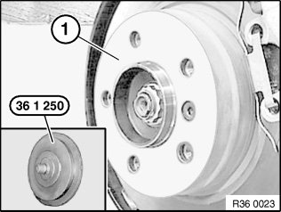
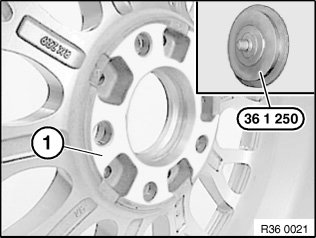
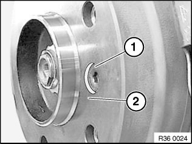
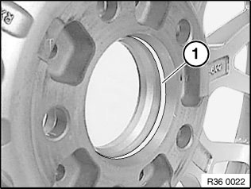
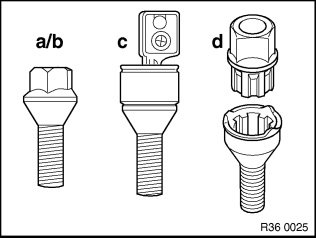
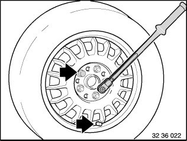
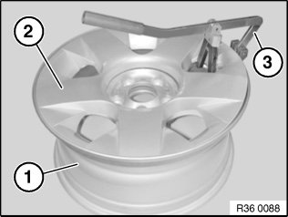
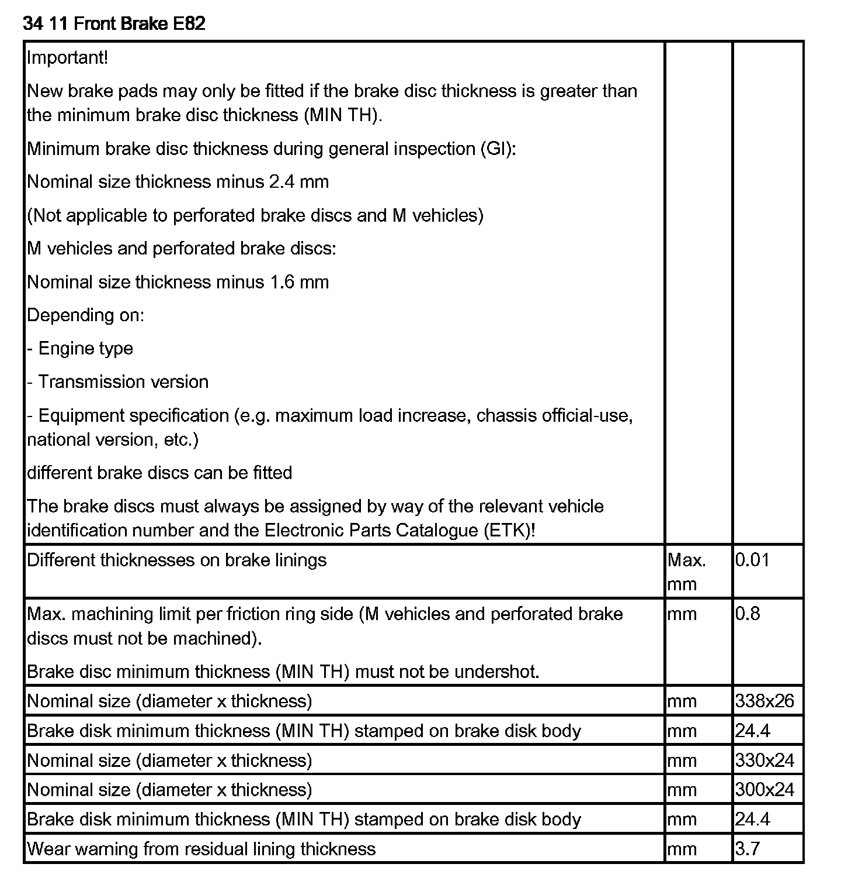
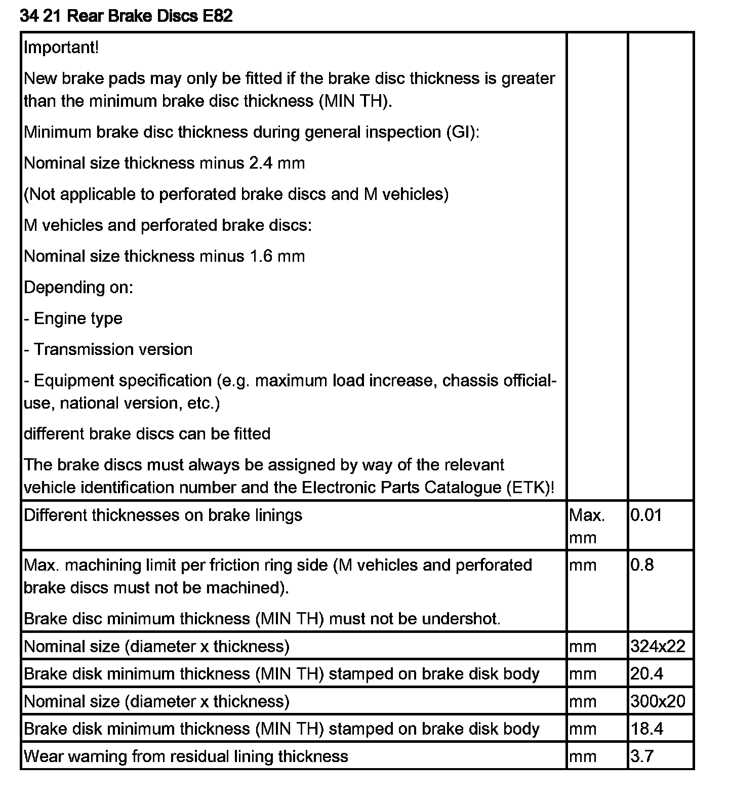

36 10 300 Removing or Installing Front or Rear Wheel
36 10 300 Remove or install front or rear wheelSpecial tools required:
Important!
Observe safety instructions on raising the vehicle.
When fitting all four wheels (e.g. when changing from summer to winter wheels), check the tire inflation pressure.
To avoid tire damage, advise the customer to check the tire inflation pressures on a regular basis (see Owner's Handbook).
Follow instructions on initializing Run Flat Indicator (RPA).
After completing installation, check again that all wheel bolts are tightened to specified torque.
Tightening torque 36 10 1AZ.

Observe the following procedure to prevent shift errors and imbalance:
- Loosen wheel bolts.
- Wheel positioned with valve facing down.
- If several wheels are simultaneously removed, mark installation location of wheels on tires (e.g. with a piece of chalk).
- Mark out wheel to wheel hub.
- Mark out lockable wheel bolt in relation to wheel.
- Release wheel bolts, remove wheel.
Important!
The following contact faces must be free from grease and clean:
- between brake disc and disc wheel
- between brake disc and wheel hub
Important!
Do not operate special tool 36 1 250 with an impact screwdriver!

Remove dirt, grease residues and corrosion from contact surface (1) with a drill and special tool 36 1 250.
Note:
Degrease contact surface with universal cleaner, refer to BMW Parts Department.
If there are grease residues in the area of the wheel bolt bore, the brake disc must be removed and cleaned.

Important!
Do not operate special tool 36 1 250 with an impact screwdriver!
Remove dirt, grease residues and corrosion from contact surface (1) with a drill and special tool 36 1 250.
Note:
Degrease contact surface with universal cleaner, refer to BMW Parts Department.

Check brake disc retaining bolt (1) for secure seating.
Important!
Mounting bolt (1) must not under any circumstances protrude over contact surface (2) between brake disc and disc wheel.
Tightening torque brake disc retaining bolt:
Front axle 34 11 1AZ.
Rear axle 34 21 1AZ.

Apply a thin coat of grease to wheel centering (1) in disc wheel.
Note:
Refer to BMW Service Operating Fluids, Main Group 36.

Wheel bolts with taper:
a) Wheel bolt - galvanized
b) Wheel bolt - black chrome plated
c) Wheel bolt - black chrome plated and lockable
d) Lockable wheel bolt with adapter, black chrome-plated
Note:
To release and tighten down lockable wheel bolts, use a matching adapter from special tool 36 1 300.
Clean wheel bolts and check threads for damage, replace, if necessary.
Replace rusty wheel bolts.
Important!
Do not apply oil to wheel bolts.
Important!
Do not under any circumstances use an impact or power screwdriver to tighten down the wheel bolts (in diagonal sequence); this must be done by hand.

Important!
Disc wheel must rest uniformly against brake disc.
In the case of non-original BMW wheel studs/rims it may be necessary to retighten the wheel studs on account of settling properties (refer to manufacturer's documents).
Fit wheel bolts and evenly tighten crosswise by hand in order to center the disc wheel.
Tighten down wheel bolts in crosswise sequence with a calibrated torque wrench to prescribed tightening torque.
Tightening torque 36 10 1AZ.
Note:
For wheels with Styling 90 wheel cover.
The wheel cover can be removed for cleaning and removal of foreign objects.

Fit special tool 36 1 120 (3) as shown on rim (1) (near valve).
Engage removal fork of special tool 36 1 120 (3) in wheel cover (2).
Pull off wheel cover (2) with handle of special tool 36 1 120 (3).


